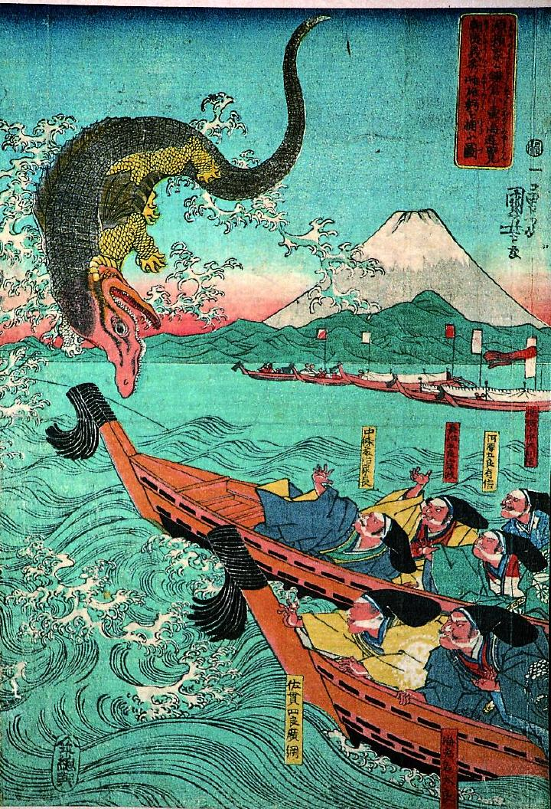

海中から飛び出したわに。爬虫類のワニのような胴体だが、よくみると背びれや胸びれがついている。全体的に緑色だが、頭部は赤く、口が大きく裂け、するどい歯が並んでいる。
著作者：歌川国芳／出典：親書誌：A5_pushkin_0008：朝夷義秀雌雄鰐を捕ふ図；アサヒナシヒデシユウノワニヲトラウズ／日付：2011／資源識別子：A5_pushkin_0008_0001_0000
Copyright (c)2010- International Research Center for Japanese Studies, Kyoto, Japan. All rights reserved.